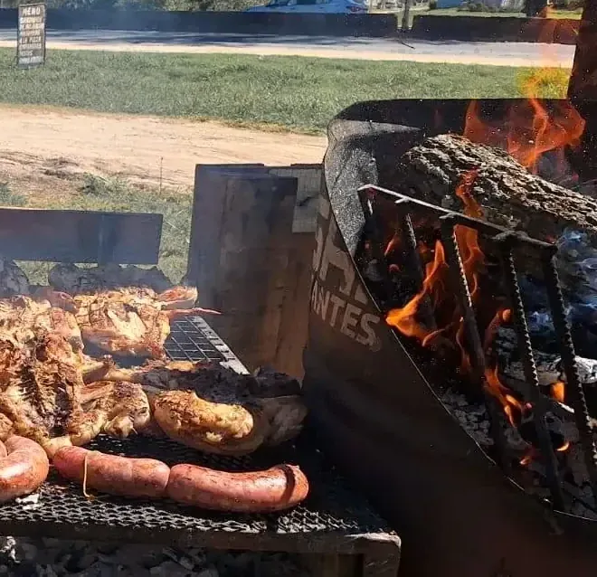
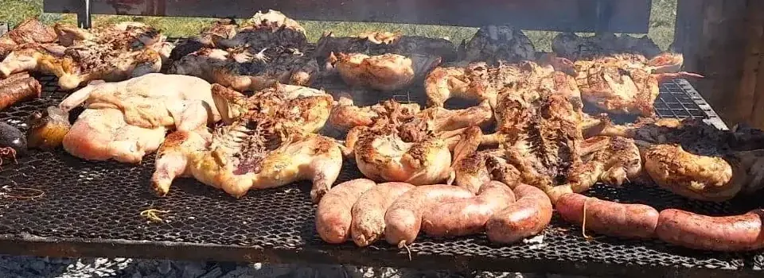
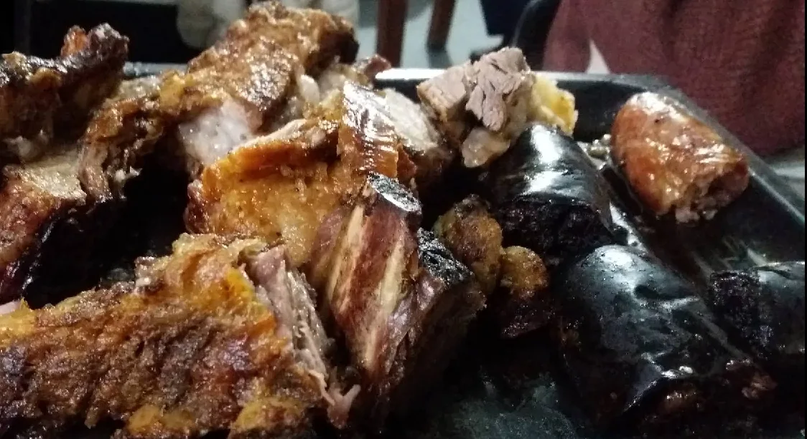
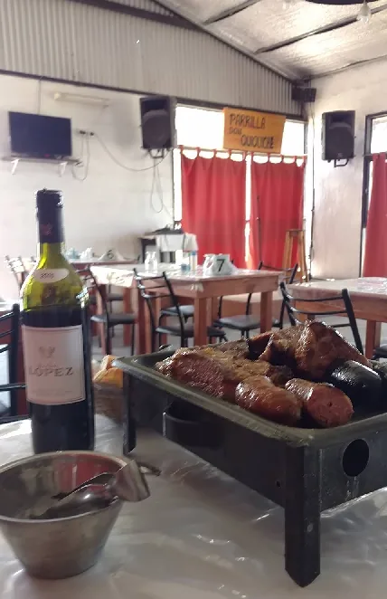
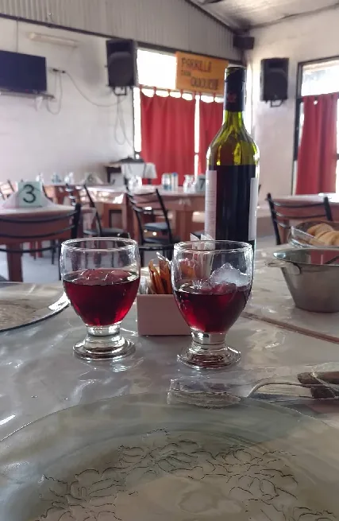
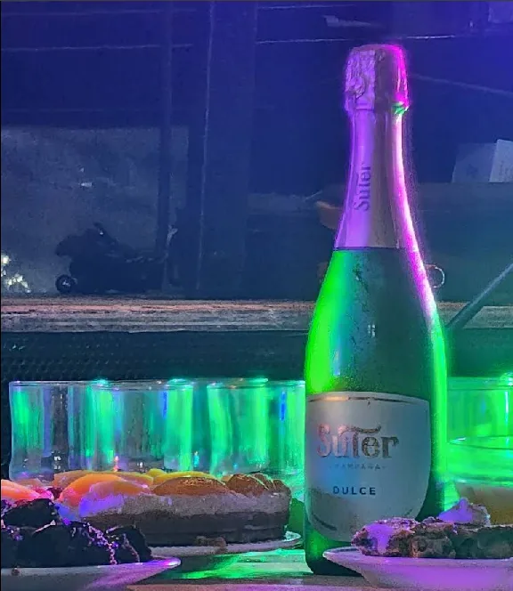
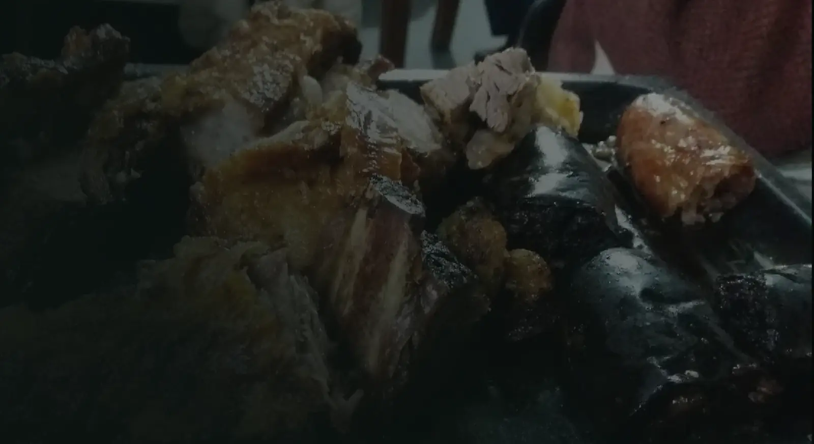

Parrilla DonQuiquiche
Parrilla, mesa y música
en Concepción del Uruguay.
11:00 Abre la casa
Un lugar para quedarse un rato.

Don Quiquiche es parrilla y ambiente familiar, con espíritu de peña. Una mesa para comer, conversar y dejar que la noche haga lo suyo.
Hacer una consulta11:00–15:00 Mediodía
Lo que llega al centro de la mesa.
Asado, parrilla y platos para compartir. La carta puede variar: consultala antes de venir.
Consultar la carta por WhatsApp
- Asado
- Parrillada




20:00–00:00 Noche
La mesa también escucha.


En distintas ocasiones, el salón se llena de música en vivo. Consultá las próximas fechas directamente.
Lo que queda
en la memoria.
Una selección de momentos reales del local y de la mesa.



Los sábados abrimos hasta las 04:00.
Nos vemos en la mesa.
Confirmá horarios y disponibilidad antes de venir, sobre todo en fechas especiales.
- Lunes a viernes
- 11:00–15:00 · 20:00–00:00
- Sábado
- 11:00–04:00
- Domingo
- 11:00–15:00
Ruta Provincial 39, Concepción del Uruguay, Entre Ríos
Cómo llegar
Una última pregunta.
Reservas, carta y próximas fechas: estamos del otro lado.